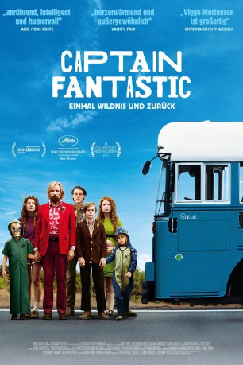

gesehen am 05.02.2017
gesehen am 05.02.2017Alternativ: Captain Fantastic gesehen am 05.02.2017
 
 IMDB-Wertung: 8.0 / 10
IMDB-Wertung: 8.0 / 10  Metascore:
Metascore: 
Der hochgebildete Ben (Viggo Mortensen) lebt aus Überzeugung mit seinen sechs Kindern in der Einsamkeit der Berge im Nordwesten Amerikas. Er unterrichtet sie selbst und bringt ihnen nicht nur ein überdurchschnittliches Wissen bei, sondern auch wie man jagt und in der Wildnis überlebt. Als seine Frau stirbt, ist er gezwungen mitsamt der Sprösslinge seine selbst geschaffene Aussteigeridylle zu verlassen und der realen Welt entgegenzutreten. In ihrem alten, klapprigen Bus macht sich die Familie auf den Weg quer durch die USA zur Beerdigung, die bei den Großeltern stattfinden soll. Ihre Reise ist voller komischer wie berührender Momente, die Bens Freiheitsideale und seine Vorstellungen von Erziehung nachhaltig infrage stellen…
Jahr: 2016
Dauer: 119 Minuten
FSK: 12
Land: USA Studio: Bleecker Street MediaTonspuren: DTS - ,
Untertitel: Deutsch,
Auflösung: 1080p (1920x800) Größe: 9584 MB
Regisseur: Matt Ross
Drehbuch: Valentine Davies
Soundtrack:
Darsteller:
 Viggo Mortensen als Ben Cash
Viggo Mortensen als Ben Cash George MacKay als Bo
George MacKay als Bo Annalise Basso als Vespyr
Annalise Basso als Vespyr Nicholas Hamilton als Rellian
Nicholas Hamilton als Rellian Charlie Shotwell als Nai
Charlie Shotwell als Nai Kathryn Hahn als Harper
Kathryn Hahn als Harper Steve Zahn als Dave
Steve Zahn als Dave Erin Moriarty als Claire
Erin Moriarty als Claire Missi Pyle als Ellen
Missi Pyle als Ellen Frank Langella als Jack
Frank Langella als Jack Ann Dowd als Abigail
Ann Dowd als Abigail Mike Miller als Priest
Mike Miller als Priest Richard Beal als Society Funeral Mourner , uncredited
Richard Beal als Society Funeral Mourner , uncredited Cliff Gravel als Funeral Mourner , uncredited
Cliff Gravel als Funeral Mourner , uncreditedDatei: X:\2016(A-F)\Captain Fantastic Einmal Wildnis und zurück (2016, FSK12, 1920x800).mkv seit 22.12.2016
Festplatte: HD 2016(A-Z)
 Es gibt insgesamt 147 Filme in der Gruppe '2016(A-F)'
Es gibt insgesamt 147 Filme in der Gruppe '2016(A-F)'